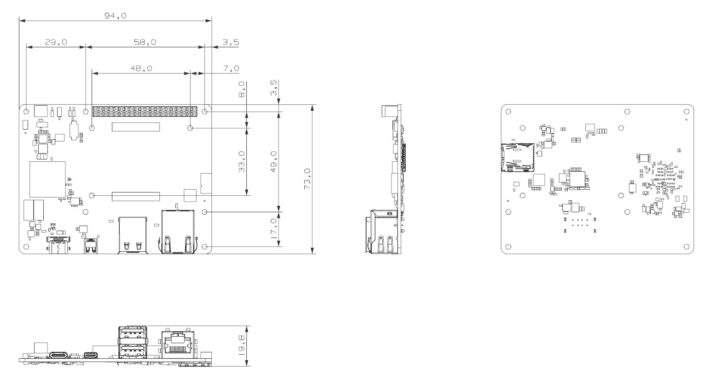

ZAIV-AHP
ZAiV-AHP는 PCI Interface 버전의 고성능 Edge AI Accelerator 보드입니다.
최대 26 TOPS(Tera-Operations Per Second)의 고성능을 갖춘 Hailo-8™ 엣지 프로세서가 탑재되어 있습니다.다른 엣지 프로세서에 비해 성능은 높지만 크기가 작고 작동 온도가 낮은 것이 큰 장점입니다.

Specification
Processor: Hailo-8™ Edge Processor
Memory: Integreated Memory
TOPS: 26
Input Power: DC 5V/3A
Interfaces
1 x USB Type-C: 5V/3A Power
1 x RJ45(Gigabit Ethernet)
1 x Micro HDMI
2 x USB 2.0
1 x External 5V Fan Connector
1 x Micro 5pin Connector for UART
Operation Temperature: 0℃ ~ 70℃
Physical Specification
dimension

설치는 크게 학습환경 구성과 실행환경 구성으로 나누어집니다.
처음 사용하는 경우 "학습환경 구성 > 컴파일환경 구성 > 실행환경 구성" 순서대로 준비 및 구성하도록 합니다.
- 학습환경 구성
YoloV5 학습을 위한 환경을 구성합니다.
- 컴파일환경 구성
학습된 결과를 ZAiV에서 실행할 수 있도록 컴파일하는 환경을 구성합니다.
- 실행환경 구성
학습된 결과를 실행할 수 있도록 환경을 구성합니다.
OS 설치
Install Ubuntu
Ubuntu 20.04 버전을 설치합니다.
공식 설치가이드를 참고해주세요.
아나콘다 설치 및 구성
파일 준비
Anaconda3-2021.05-Linux-x86_64.sh
yolov5_retraining.ipynb
data.yaml
설치
실행된 가상환경에서 Yolov5 모델을 커스텀 데이터셋으로 학습하기위해 필요한 파일을 구성합니다.
필요한 라이브러리 먼저 설치를 진행합니다.
의존성 설치
sudo apt-get install Net-tools git libxcb-xinerama0Anaconda 설치
sudo bash Anaconda3-2021.05-Linux-x86_64.sh라이선스 확인
라이선스 확인은 q를 눌러 넘기고 yes를 입력합니다.

저장경로 설정
저장 경로를 지정합니다. 기본 경로는 /root/anaconda3 입니다.

Root 계정 conda init 여부
Root 계정도 conda init을 할것인지 물어보는 부분이며 yes / no 상관없습니다.

설정
Path 지정 (conda 기본 경로이며 변경한 경우 변경된 path로 지정해야 합니다.)
source /root/anaconda3/bin/activate conda init source ~/.bashrcConda 환경 활성화 (conda 환경을 자동으로 활성화하는 옵션입니다.)
conda config –-set auto_activate_base {True or False} conda create -n yolov5 python=3.9 conda activate yolov5 conda install jupyter mkdir yolov5_workspace
학습파일 복사
설정에서 만든 **yolov5_workspace** 폴더로 이동 후 아래 두 파일을 복사합니다.
yolov5_retraining.ipynb
data.yaml
cd yolov5_workspace # 파일들이 ~/Downloads에 있다고 가정 cp ~/Downloads/yolov5_retraining.ipynb . cp ~/Downloads/data.yaml .실행
Jupyter notebook
Yolov5 설치
설치는 Jupyter 파일에 학습과 함께 구성되어 있습니다. "시작하기" 섹션의 학습가이드와 함께 안내합니다.
Docker 설치
Terminal 실행
APT repository 업데이트
sudo apt-get updateDocker's official GPG key 추가
sudo apt-get install ca-certificates curl gnupg sudo install -m 0755 -d /etc/apt/keyrings curl -fsSL https://download.docker.com/linux/ubuntu/gpg | sudo gpg --dearmor -o /etc/apt/keyrings/docker.gpg sudo chmod a+r /etc/apt/keyrings/docker.gpgDocker repository를 APT sources에 추가
echo "deb [arch="$(dpkg --print-architecture)" signed-by=/etc/apt/keyrings/docker.gpg] https://download.docker.com/linux/ubuntu "$(. /etc/os-release && echo "$VERSION_CODENAME")" stable" | sudo tee /etc/apt/sources.list.d/docker.list > /dev/null sudo apt-get updateDocker 설치 명령어
sudo apt-get install docker-ce docker-ce-cli containerd.io docker-buildx-plugin docker-compose-pluginDocker 테스트
sudo docker images
Docker 환경 설정
Terminal 실행
Docker 권한 부여
sudo usermod -aG docker ${USER} # Docker.sock permission 오류가 나는 경우 아래 명령 입력 후, 계정 로그아웃 및 재로그인 필요 sudo chmod 666 /var/run/docker.sockGPU가 있는 경우, GPU 가상화를 위한 nvidia-docker2, nvidia-container-toolkit 설치
distribution=$(. /etc/os-release;echo $ID$VERSION_ID) && curl -s -L https://nvidia.github.io/nvidia-docker/gpgkey | sudo apt-key add - && curl -s -L https://nvidia.github.io/nvidia-docker/$distribution/nvidia-docker.list | sudo tee /etc/apt/sources.list.d/nvidia-docker.list sudo apt-get update sudo apt-get install -y nvidia-docker2 nvidia-container-toolkit sudo systemctl restart docker
Hailo SW Suite 설치
Terminal 실행
압축해제 (파일은 상단 다운로드 탭에 링크되어 있으며, 용량이 약 9GB 정도 되므로, 사양에 따라 압축해제 시간이 오래 걸릴 수 있습니다.)
unzip hailo_sw_suite_2023-07.1_docker.zipDocker_run.sh 실행
./hailo_sw_suite_docker_run.shDocker 재접속 명령어
./hailo_sw_suite_docker_run.sh --resume
Raspberry PI4 CM4
MicroSD Reader와 32GB microSD Card를 준비합니다.
RaspBerry PI Imager와 사전 설치 이미지(기본 환경 구성본) 및 Raspberry Pi Imager를 상단 다운로드 탭에서 다운로드 합니다.
Raspberry Pi Imager를 설치합니다.
Image를 write합니다.
- Raspberry PI Imager 실행
- 운영체제 버튼 클릭 > 사용자 정의 사용 > 파일 선택 다이얼로그에서 다운로드받은 이미지 선택
- 저장소 버튼 클릭 > PC에 연결한 Micro SD카드 volume을 선택.
- 쓰기
OS 설치
Raspberry PI 4 CM4
이미지 준비
Raspberry PI Imager(x86, MacOS, Ubuntu )와 RaspbianOS Buster OS Image를 준비합니다.
설치
Raspberry PI Imager를 설치안내에 따라 설치합니다.
Micro SD 연결.
MicroSD카드를 Reader기에 결합 후 PC에 연결합니다.
이미지 Flashing
Raspberry PI Imager 실행
운영체제 버튼 클릭 > 사용자 정의 사용 > 파일 선택 다이얼로그에서 다운로드받은 이미지 선택
저장소 버튼 클릭 > PC에 연결한 Micro SD카드 volume을 선택
쓰기
연결 및 부팅(공통)
ZAiV-AHP에 Raspberry PI CM4 또는 Raxda CM5를 연결합니다.
이미지가 설치된 Micro SD카드를 Micro SD카드 슬롯에 삽입합니다.
모니터의 전원을 연결하고 모니터와 장치 간에 HDMI 케이블을 통해 연결합니다.
USB 키보드/마우스를 연결합니다.
인터넷이 가능한 Etherent Cable을 RJ45 포트에 연결합니다.
USB Webcam을 연결합니다.
마지막으로 전원을 인가하여 장치를 부팅합니다.
프로그램 설치(공통)
종속성 설치
sudo apt-get update -y && \ sudo apt-get upgrade -y && \ sudo apt-get dist-upgrade -y && \ sudo apt-get update -y && \ sudo apt-get upgrade -y && \ sudo apt-get dist-upgrade -y && \ sudo apt-get install build-essential gawk gcc g++ gfortran git texinfo bison libncurses-dev -y && \ sudo add-apt-repository ppa:ubuntu-toolchain-r/test -yGCC 설치 (라즈베리 파이의 경우만 따로 설치)
파일 다운로드
상단 다운로드 탭의 링크를 통해서 다운로드받거나, 링크를 통해 다운로드 받습니다.
압축해제
tar xf native-gcc-9.4.0-pi_64.tar.gz복사
sudo mv native-pi-gcc-9.4.0-64 /optPath 설정
echo 'export PATH=/opt/native-pi-gcc-9.4.0-64/bin:$PATH' >> .profile echo 'export LD_LIBRARY_PATH=/opt/native-pi-gcc-9.4.0-64/lib:$LD_LIBRARY_PATH' >> .profile source .profileImportant Symlinks 설정
sudo ln -sf /usr/include/aarch64-linux-gnu/asm/* /usr/include/asm sudo ln -sf /usr/include/aarch64-linux-gnu/gnu/* /usr/include/gnu sudo ln -sf /usr/include/aarch64-linux-gnu/bits/* /usr/include/bits sudo ln -sf /usr/include/aarch64-linux-gnu/sys/* /usr/include/sys sudo ln -sf /usr/include/aarch64-linux-gnu/openssl/* /usr/include/openssl sudo ln -sf /usr/lib/aarch64-linux-gnu/crtn.o /usr/lib/crtn.o sudo ln -sf /usr/lib/aarch64-linux-gnu/crt1.o /usr/lib/crt1.o sudo ln -sf /usr/lib/aarch64-linux-gnu/crti.o /usr/lib/crti.o sudo ln -s /opt/native-pi-gcc-9.4.0-64/bin/aarch64-linux-gnu-g++-9.4.0 /opt/native-pi-gcc-9.4.0-64/bin/g++-9 sudo ln -s /opt/native-pi-gcc-9.4.0-64/bin/aarch64-linux-gnu-gcc-9.4.0 /opt/native-pi-gcc-9.4.0-64/bin/gcc-9GCC 버전 추가
sudo update-alternatives --install /usr/bin/gcc gcc /opt/native-pi-gcc-9.4.0-64/bin/gcc-9 1 --slave /usr/bin/g++ g++ /opt/native-pi-gcc-9.4.0-64/bin/g++-9GCC 버전 추가
sudo update-alternatives --config gcc
OpenCV 설치
OpenCV Dev 설치
sudo apt-get install -y libopencv-devarm (raspberry pi)
# 기존 라이브러리 확인 위한 패키지 설치 sudo apt-get install pkg-config -y # 기존 라이브러리 확인 pkg-config --modversion opencv # 기존 라이브러리가 있으면 삭제 sudo apt-get purge libopencv* python-opencv -y sudo apt-get autoremove -y # 시스템 업데이트 sudo apt install software-properties-common sudo add-apt-repository ppa:deadsnakes/ppa sudo apt update sudo apt upgrade # 빌드 툴 및 의존라이브러리 설치 sudo apt-get install build-essential cmake libjpeg-dev libtiff5-dev libpng-dev libavcodec-dev libavformat-dev libswscale-dev libxvidcore-dev libx264-dev libxine2-dev libv4l-dev v4l-utils libgstreamer1.0-dev libgstreamer-plugins-base1.0-dev libgtk2.0-dev mesa-utils libgl1-mesa-dri libgtkgl2.0-dev libgtkglext1-dev libatlas-base-dev gfortran libeigen3-dev python3-dev python3-numpy -y # 작업 디렉토리 생성 mkdir opencv cd opencv # 소스코드 다운로드 wget -O opencv.zip https://github.com/opencv/opencv/archive/3.4.3.zip wget -O opencv_contrib.zip https://github.com/opencv/opencv_contrib/archive/3.4.3.zip # unzip unzip opencv.zip unzip opencv_contrib.zip # 빌드 cd opencv-3.4.3 mkdir build cd build # cmake 빌드환경 구성 cmake -D CMAKE_BUILD_TYPE=RELEASE -D CMAKE_INSTALL_PREFIX=/usr/local -D WITH_TBB=OFF -D WITH_IPP=OFF -D WITH_1394=OFF -D BUILD_WITH_DEBUG_INFO=OFF -D BUILD_DOCS=OFF -D INSTALL_C_EXAMPLES=ON -D INSTALL_PYTHON_EXAMPLES=ON -D BUILD_EXAMPLES=OFF -D BUILD_TESTS=OFF -D BUILD_PERF_TESTS=OFF -D ENABLE_NEON=ON -D ENABLE_VFPV3=ON -D WITH_QT=OFF -D WITH_GTK=ON -D WITH_OPENGL=ON -D OPENCV_ENABLE_NONFREE=ON -D OPENCV_EXTRA_MODULES_PATH=~/Downloads/opencv/opencv_contrib-3.4.3/modules -D WITH_V4L=ON -D WITH_FFMPEG=ON -D WITH_XINE=ON -D ENABLE_PRECOMPILED_HEADERS=OFF -D BUILD_NEW_PYTHON_SUPPORT=ON -D OPENCV_GENERATE_PKGCONFIG=ON -D ENABLE_CXX11=ON ../ # 스왑설정 # 메모리 부족을 막기 위해 스왑사이즈 설정(CONF_SWAPSIZE를 100->1024 로 설정) sudo vi /etc/dphys-swapfile # 스왑영역 확인 free sudo /etc/init.d/dphys-swapfile restart free # 빌드 (약 한시간 걸림) time make -j4 # 설치 sudo make install # 확인 cat /etc/ld.so.conf.d/* # 확인 시 혹시 'usr/local/lib' 부분이 없다면 아래 명령 입력 sudo sh -c 'echo 'usr/local/lib' /etc/ld.so.conf.d/opencv.conf' # 설정 로드 sudo ldconfig # 스왑 영역 복구(CONF_SWAPSIZE를 1024->100 으로 설정) sudo vi /etc/dphys-swapfile # 스왑영역 확인 sudo /etc/init.d/dphys-swapfile restart free # 실행 확인 pkg-config --modversion opencv
HailoRT 설치
arm (raspberry pi)
sudo dpkg -i hailort_4.12.0_arm64.debamd64 (pc)
sudo dpkg -i hailort_4.13.0_amd64.deb
Tappas 의존성 패키기 설치 (사용 시 설치)
Raspbian OS
Ubuntu
GStreamer 설치
sudo apt-get install -y libcairo2-dev libgirepository1.0-dev libgstreamer1.0-dev libgstreamer-plugins-base1.0-dev libgstreamer-plugins-bad1.0-dev gstreamer1.0-plugins-base gstreamer1.0-plugins-good gstreamer1.0-plugins-bad gstreamer1.0-plugins-ugly gstreamer1.0-libav gstreamer1.0-tools gstreamer1.0-x gstreamer1.0-alsa gstreamer1.0-gl gstreamer1.0-gtk3 gstreamer1.0-qt5 gstreamer1.0-pulseaudio python-gi-devTappas 설치 (사용 시 설치)
# "~/Downloads"에 파일이 있다고 가정. cd ~/Downloads unzip tappas_3.23.0_linux_installer.zip cd tappas_v3.23.0 ./install.sh --skip-hailort --target-platform rpi
Jupyter Notebook 실행
터미널 실행
작업 폴더로 이동
# 설치 시 생성한 폴더로 이동 cd ~/yolov5_workspacenotebook 실행
Jupyter notebook
학습 준비
Notebook 파일 실행
yolov5_retraining.ipynb 파일을 더블클릭 하여 실행합니다.
진행과정별로 구성되어 있으므로, 설명에 따라 진행하면 학습을 진행할 수 있습니다.
YoloV5 설치

Image 파일 저장폴더 생성

이미지 라벨링
라벨링 프로그램 실행


학습할 이미지 파일들을 이전에 생성한 TrainDataset/train/images 경로로 옮깁니다.
Open Dir 버튼을 눌러서 TrainDataset/train/images 경로로 지정하면 이미지들을 모두 열고 Change Save Dir 버튼을 눌러서 TrainDataset/train/labels 경로로 지정합니다.
이미지를 열어 박스를 그리면 라벨이름을 지정하는 창이 출력되며 라벨이름은 저장되어 선택 리스트에 표시됩니다. - 라벨작업을 할 때 마다 저장합니다.
라벨링이 종료되면 train 데이터의 10%정도를 vaild 폴더로 이동합니다.
TrainDataset/train/images 10% => TrainDataset/vaild/images TrainDataset/train/labels 10% => TrainDataset/vaild/labels TrainDataset/train/images 10% => TrainDataset/test/images마지막으로 노트북 파일과 같이 옮겼던data.yaml 파일을 열어서 수정합니다.
각각의 데이터 셋 경로를 지정하고, 라벨링툴을 이용해서 생성된 classes.txt파일을 참조하여 순서대로 지정하면 됩니다.

학습
학습 시작

Train.py 의 arguments
img=이미지 사이즈
batch=학습 이미지 단
epochs=학습 반복 횟수
data=데이터 셋 정보가 있는 yaml 파일 경로
weights=가중치 파일
cache=캐시메모리 사용 여부입니다.
학습 결과
학습이 완료되면 runs/train/exp 경로에 Loss가 가장 적었던 best모델(best.pt)이 저장됩니다.

학습 결과 검증
Tensorboard를 이용하여 모델이 학습된 세부 내용들을 확인할 수 있고 detect.py를 이용하여 학습된 모델로 추론 결과를 테스트할 수 있습니다.

학습된 모델을 ONNX로 내보내기
Export.py를 이용해 onnx파일로 저장해주면 커스텀 데이터 셋으로 모델 학습이 완료되었습니다. Export된 onnx파일은 ZAiV Board에 맞게 컴파일 시 사용됩니다.

DFC 준비
폴더 구조 생성
컴파일환경 구성에서 설치한 Hailo SW Suite 도커환경에는 ./hailo_sw_suite_docker_run.sh를 실행한 경우 폴더가 하나 생깁니다.
- shared_with_docker 폴더
도커 내의 /local/shared_with_docker 디렉토리와 공유된 디렉토리
해당 디렉토리로 다운로드 탭의 withus_dfc.zip을 다운로드하여 unzip 합니다.
unzip withus_dfc.zip
파일 준비
압축 해제한 파일 내의 설정들을 수정 및 준비합니다.
- dataset 폴더
calibration용 이미지 폴더
- har, hef, svg 폴더
DFC 산출물 저장 폴더
- *.onnx
이 경로로 변환할 onnx파일을 이동 필요
- nms_config_yolov5_sign.json
nms를 위한 하이퍼파라미터 설정
- DFC.ipynb
Compile을 위한 노트북 파일
nms_config_yolov5_sign 작성 참고
반드시 classes 개수에 따른 수정이 필요합니다.
NMS 알고리즘에 적용될 임계값 (nms_scores, nms_iou) 들은 성능 평가에 영향을 줍니다. (필요한 경우 변경해보며 테스트합니다.)
Image_dims는 입력 shape 사이즈 이므로 학습 shape 사이즈와 동일하게 설정합니다.
Bbox_decoders의 encoded_layer는 파싱 후 visualizer를 실행하여 확인할 수 있는 .svg 파일에서의 output layey 이름입니다. (작성된 기준 모델은 yolov5n.pt 이며 모델이 다르면 다를 수 있습니다.)
model_optimization_config 내용을 수정하면 calibration 과정이 변경됩니다.
가이드는 매우 간소화 되어있으며 기본값은 batch_size=2, calibset_size=64입니다.
하이퍼파라미터 설정
Nms_scores_th : nms 에서 사용되는 임계값
nms_iou_th : iou를 계산할 임계값
image_dims : 입력 shape
classes : 클래스 개수
bbox_decoders -> encoded_layer : 파싱한 후의 EndNode name을 입력
Docker 실행
Run Docker
Docker DFC 실행
./hailo_sw_suite_docker_run.shDocker 재접속
./hailo_sw_suite_docker_run.sh --resume
Compile 진행 (도커)
컴파일 준비
shared 파일 확인
cd /local/shared_with_docker ls로컬에 압축해제 후 설정한 파일들이 잘 공유되어 있는지 확인해줍니다.
노트북 파일 복사
압축 해제한 파일에 있는 DFC.ipynb 파일을 지정된 경로로 이동합니다.
sudo cp /local/workspace/DFC.ipynb /local/workspace/hailo_virtualenv/lib/python3.8/site-packages/hailo_tutorials/notebooks/DFC.ipynb sudo chmod 777 /local/workspace/hailo_virtualenv/lib/python3.8/site-packages/hailo_tutorials/notebooks/DFC.ipynb컴파일 실행
도커 컨테이너 터미널에서 hailo tutorial을 실행하여, 컴파일 환경으로 진입합니다. (편의성을 위해 --ip 속성을 주어 ip로 접속 가능하도록 실행합니다)
hailo tutorial --ip 0.0.0.0다음과 같은 실행 결과에서 빨간 박스안의 https 링크를 가상머신이 아닌 host PC에서도 웹 브라우저 주소창에 입력하면 jupyter 환경이 열립니다.

노트북 환경이 표시되면 DFC.ipynb 파일을 선택하여 열고 세부 내용을 하나씩 수정합니다.

DFC.ipynb 수정
Model Parsing

- 주의사항 -
workpath는 withus_dfc.zip 파일을 압축해제한 host-docker 공유폴더 입니다.
shape 이름과 정보는 Netron 프로그램을 이용하여 확인이 가능합니다.
Calibration Dataset

- 주의사항 -
yolov5 모델을 학습할 때 사용한 --img 변수의 값으로 output_height/output_width/resize_size와 np.zeros 사이즈를 입력합니다.
준비한 보정 데이터셋의 이미지 형식이 .png인지 .jpg인지 확인하고 수정합니다.
Model Optimization

- 주의사항 -
yolov5 nano 모델에 최적화된 model_script 입니다.
calibset_size는 1000개를 보정용 데이터셋 이므로 큰 데이터셋을 사용해도 무방하지만 개선점이 크지 않을 수 있습니다.
Model Compilation

- 주의사항 -
yolov5 nano 모델에 최적화된 model_script 입니다.
calibset_size는 1000개를 보정용 데이터셋 이므로 큰 데이터셋을 사용해도 무방하지만 개선점이 크지 않을 수 있습니다.
Model Inference Test

- 주의사항 -
calib_dataset[:16,...] 해당코드로 추론 결과를 확인해볼 이미지범위를 수정할 수 있습니다. 현재는 0~16번째의 이미지를 추론하여 결과를 보여줍니다.
아래 사용법을 가이드합니다.
CPP 및 OpenCV 라이브러리를 이용 빌드 및 실행
소스코드 준비
압축해제
“hailo_yolov5_cpp_example.zip” 파일의 압축을 해제합니다.
unzip hailo_yolov5_cpp_example.zip
빌드
빌드
"hailo_yolov5_cpp_example“폴더로 이동하여 빌드 스크립트를 통해 프로젝트를 빌드합니다.
cd hailo_yolov5_cpp_example ./build.sh빌드결과 확인
빌드 완료된 실행 파일은 “[프로젝트경로]/build/aarch64/customer_demo” 파일입니다.
cd hailo_yolov5_cpp_example ./build.sh
실행
ZAiV 준비
실행 시 사용할 ZAiV PCI Board에 Raspberry PI CM4 모듈을 결합합니다.
주변장치 준비
키보드/마우스(통합형), 카메라 및 micro HDMI포트를 이용해 각 주변장치를 연결합니다.
실행
USB Type-C 5V/3A 어댑터를 연결해 전원을 인가합니다.
부팅 후 실행 시 ZAiV Ethernet interface의 이름 및 연결된 카메라 번호가 필요합니다. 카메라 번호를 확인 후 아래 명령어를 통해 컴파일된 프로그램을 실행합니다.
./build/aarch64/customer_demo [카메라 번호] # ex) ./build/aarch64/customer_demo 0 # ./build/aarch64/customer_demo 3 # # * 카메라 번호 # 카메라 번호는 /dev/video 번호를 가져오면 되며 v4l2-ctl -–list-devices 명령어를 사용하여 확인할 수 있습니다. ```
학습환경
PC
항목
사양
비고
CPU
Intel or AMD
64bit, avx 지원 CPU
Memory
16Gb 이상
32 GB 이상 권장, 16GB 미만에서는 Docker Image가 동작하지 않습니다. 그리고 학습 규모에 따라 변동됩니다.
Graphic Card
Nvidia’s Pascal/Turing/Ampere GPU architecture (such as Titan X Pascal, GTX 1080 Ti, RTX 2080 Ti, or RTX A4000)
GPU driver version 470, CUDA 11.2, CUDNN 8.1
Storage
512Gb 이상
학습 규모에 따라 변동
Monitor
그래픽카드에 따른 인터페이스의 모니터
Peripherals
키보드,마우스, Cables
기타 필요한 장치들
OS/SW
항목
파일
다운로드
OS
Ubuntu 20.04
https://releases.ubuntu.com/focal/
Hailo sw suite docker Image
Hailo sw suite docker.zip
실행환경
HW
항목
사양
비고
ZAiV Board
ZAiV-AHR Board
Host PC or Board
X86/AMD64 기반 PC or Raspberry Pi4 B+ or Jetson nano
지원 가능 장치 중 1개 준비
Micro SD Card
32GB 이상
Raspberry pi나 Jetson Nano의 경우 필요
Camera
USB Webcam
대부분의 USB Webcam은 지원합니다.
Monitor
지원장치에 따른 인터페이스 모니터
Peripherals
키보드/마우스
Monitor Cable
지원장치의 사양에 따른 인터페이스 케이블
Micro HDMI to HDMI Cable (라즈베리파이4의 경우 필요.), HDMI Cable (PC 및 Jetson nano의 경우 필요.)
Ethernet Cable
Cat5e
2EA
Serial Cable
USB A to Micro 5Pin
ZAiV-AHP의 경우 USB to Serial로 사용
SW - 공통
항목
파일
다운로드
GCC9 for pi (Raspberry Pi의 경우 필요)
native-gcc-9.4.0-pi_64.tar.gz
todo
Yolo Cpp & OpenCV Example
hailo_yolov5_cpp_example.zip
Tappas (AI 구동 예제)
tappas_3.23.0_linux_installer.zip
SW - 신규 OS 설치 시
항목
파일
다운로드
HailoRT ( Hailo arm64 실행환경 )
hailort_4.12.0_arm64.deb
HailoRT ( Hailo amd64 실행환경 )
hailort_4.13.0_arm64.deb
todo
HailoRT PCI Driver (Hailo PCI Driver, 필요 시 설치)
hailort-pcie-driver_4.13.0_all.deb
Raspberry PI Imager
imager_latest.xxx
RaspbianOS Buster OS
2021-05-07-raspios-buster-arm64.zip
SW - 사전 설치완료 OS 설치 시
Withus 문의(withus@with-us.kr)
항목
파일
다운로드
RaspbianOS (Buster)
RP4_ROS_OpenCV3.4_Hailo_64bit.img
문의
Raspberry PI Imager
imager_latest.xxx
Jetson Nano
jetson_nano_4gb_ros_opencv_set_20211015.img
문의
구매 문의
구매는 어디서 하나요?
구매는 네이버 스마트 스토어 및 Withus 영업팀을 통해 하실 수 있습니다.
네이버 스마트 스토어 (23년 11월 오픈예정)
Withus 영업
TEL : +82-031-889-0100
Sales : withus@with-us.kr
기술 지원
관련 문의는 어떻게 하나요?
Github issue 및 메일을 통해서 지원받으실 수 있습니다.